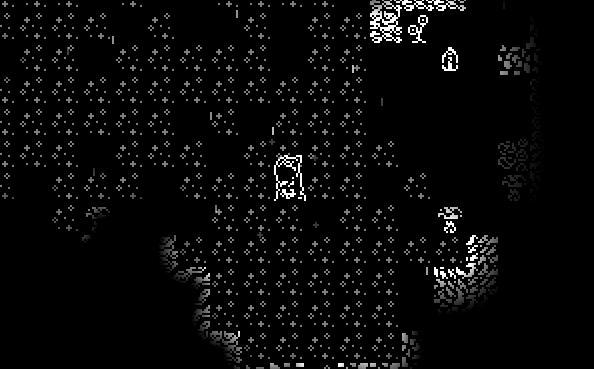

Wotansauge
Wotansauge is a 2D survival-exploration game where you can mine, craft, trap and starve in a dried aquifer after a horrible apocalyptic event. The game is based off of a bunch of games I play, examples are: Don't Starve, Minecraft, Terraria, Dwarf Fortress, etc. The goal? There is none, as this game is still in development and likely will be for a while without one. The game was created with MonoGame ( The quintessential XNA successor ) and is packaged with the dll if you wish to decompile the game yourself! Happy surviving!
-
Version 0.1.3
Release of 0.1.3
08_23_23-0.1.3 README Update Log -
Version 0.1.2_02
Fixed a bug from 0.1.2_01
08_14_23-0.1.2_02 README Update Log -
Version 0.1.1
Testing release of Wotansauge version 0.1.1
08_04_23-0.1.1 README Update Log -
Version 0.1.0
Initial release of Wotansauge version 0.1.0
07_21_23-0.1.0 README